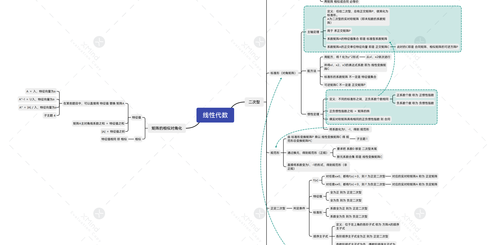

学习是一个令人头疼的问题
我总想在这写点什么...
事实上，学习与天赋有关，是因为有些人在小时候就已经掌握了学习的本质，能够快速地找到内容的规律并应用它们。
也就是说，天赋其实就是所掌握的正确的学习方法。如果你也能掌握正确的学习方法，那么你也将获得快速学习的能力。
该页面将会不断更新学习方法的内容，敬请期待。
什么是笔记
没什么时间，也就简要写写吧。
笔记，是用来整理信息的。也就是以自己的理解方式，将有效信息收集起来并装订成易于自己游览的形式。
既然如此，为什么还要大幅度地摘抄书上的知识点呢？
人的一生都在化简。大事化小，小事化了。知识亦是如此。
复杂的真理，化简为繁琐的论文，再到精简的教科书，随后成为你的小巧笔记。
人类现代文明之精华，就这么融入到了你的思维之中。这，叫做感觉（feeling）。
你所学到的，都变成了感觉。所有事物与经验，都化成了内心中说不出也摸不着的感觉。
感觉，才是人类的核心。
这就是笔记的核心——化简。
既然如此，我们也没必要去把所有的知识点都塞进去，只需要找到自己所认为的核心就行。
做成 mind map（思维导图），需要的时候再基于此去查阅，即可。
如何不做笔记？
1、尽量直接在书上划线
这样不但花时间很少，而且也不必另外再花时间，书写笔记。
可以不写就不写，直接查就能知道的东西为啥还要抄一遍？
把自己想到的东西写在书上就行。
2、只写行动相关的笔记
只有那些需要自己要行动起来的内容，才有必要记录到笔记本上。
事实上，不一定是实体笔记本。你可以用手机、平板、电脑等使用笔记软件记入下来。
3、学会思维导图笔记
可以大幅减少记录的字数，也一目了然、易于修改。
用自己能够理解的文字记录下简要关键内容以及自己的思考。
一个思维导图
学习误区：自我感动的伪努力。
学习的困惑
每天都在努力，今天也要“頑張れ”！（烂梗）= =
高中时，一直都在学习，但是为什么却一直没有进步？
明明错题本，课堂笔记，该做的都做了，为什么没有进步？
不禁开始自我怀疑，感叹人与人之间智商的不平等。
步入大学，莫名接受了自己“不如人”的标签。
“我真的努力过了！只是他们的智商更高而已。”每天都在用自我欺骗的方式，希望能够麻痹自己，不愿面对现实。
为了能够证明自己真的有在努力，每天早起晚归，去图书馆，去请教老师，去上网课...做尽一切和学习有关的事情，只是为了能够得到一些慰籍。
一天天过去了，看着一堆笔记和错题，买了很多教辅书，你欣慰地笑了笑。
终于，面临着令人喘不过气来的期末考试，你提笔走进了考场，心想“既然努力了这么久，越努力，越幸运吧。”
战战兢兢地翻开试卷，看到的题目似乎从来没有见过，又或是有点眼熟，却无从下笔。
考试过后，翻开错题本，发现第一页就是自己在试卷上写过的题目，一模一样。
是没有复习错题本的缘故吗？不是，你每天都在复习。
是没有记住的缘故吗？不是，人类从来不会忘记过目的事物。
我明明已经很努力了啊！！
翻开时间表：
> 周一，学习新章节，看网课，记笔记并整理。
> 周二，刷题，摘抄错题及其解析。
> 周三，背单词，复习。
> 周四，...
（以上是某位朋友的真实写照）
你看，我每天都在努力啊！...
到底错在哪里了？
写笔记有错？写错题本有错？用教辅有错？并没有。
只是，这个方法不一定适合你。
大家都这么做，并不意味着你也要这么做。
你需要的，是属于自己的学习方法，而不是照搬别人的学习方法，更不是强行接受别人的学习方法。
人与人是不同的。
《穷查理宝典》指出：“如果我知道能够让我致死的坑在哪里，那么我永远都不会去掉进去。”
问题是，在没有进行观测的情况下，除了依靠经验推测之外，你根本不知道坑在哪里。
既然这样，唯一的排坑手段就只有一个个去试了吧。
是的，这就是我的方法论。
最近摸索到的学习方法，即是如上所诉的“思维导图法”。
并非说这种方法就是正确的，只是暂时看不出来什么弊端。所以我才需要尝试，就像高三时赌上未来而逃课一样。
不踏出去这一步，你永远不知道这一步是否正确。
去试试吧，我只能这么说。